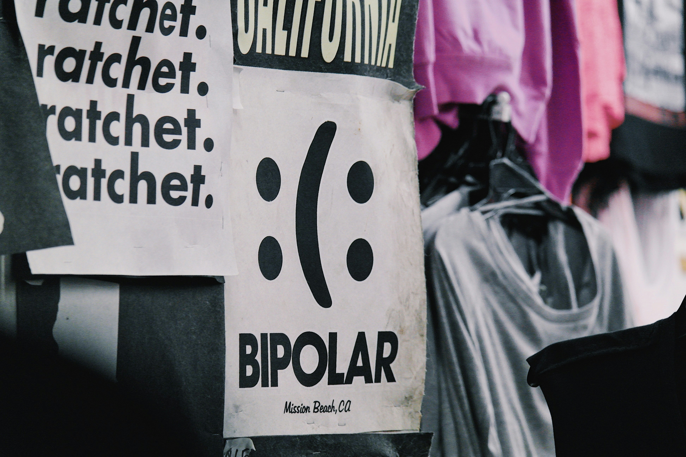
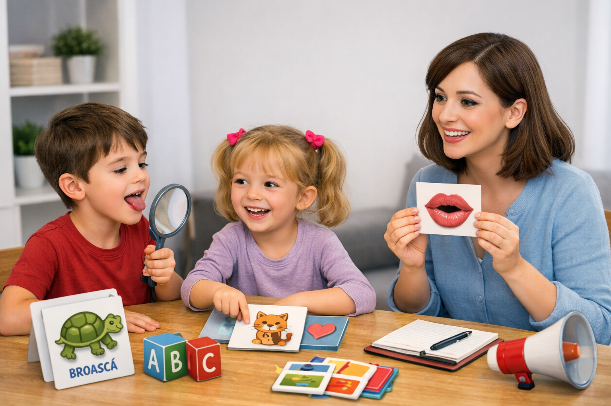
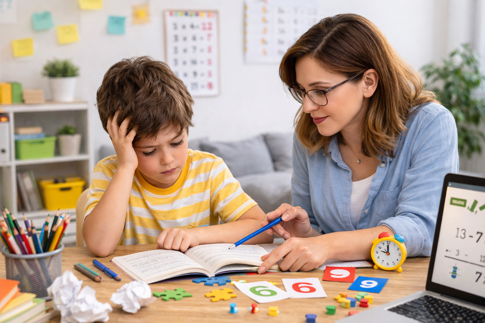
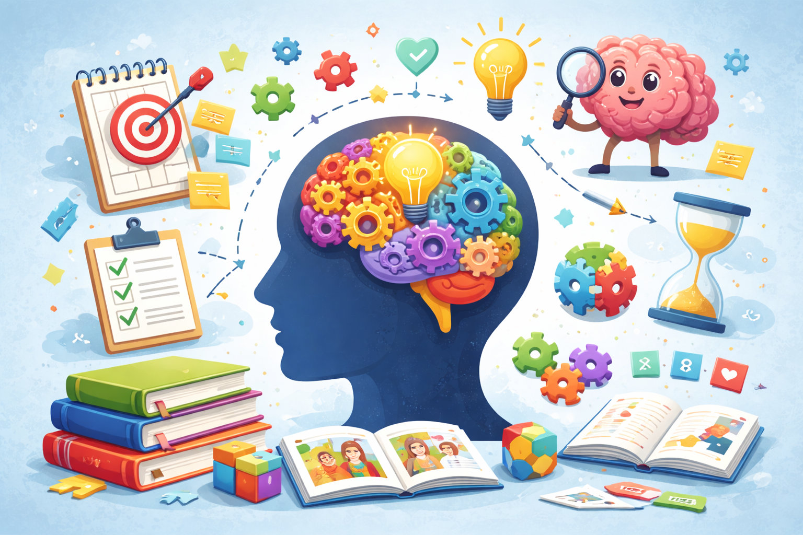

Servicii psihologice
Evaluare și consiliere psihologică într-un cadru profesional, confidențial și etic,
conform normelor Colegiului Psihologilor din România.
1) Evaluare psihologică
Evaluarea psihologică reprezintă un proces complex de analiză a funcționării emoționale,
cognitive și comportamentale, realizat prin interviu clinic, observație și utilizarea unor
instrumente psihologice adecvate. Aceasta are rolul de a clarifica natura dificultăților
cu care se confruntă persoana și de a evidenția resursele individuale.
2) Consiliere psihologică
Consilierea psihologică oferă un cadru sigur, confidențial și structurat în care persoana
poate explora dificultățile cu care se confruntă, emoțiile asociate acestora și modalitățile
de adaptare disponibile. Procesul urmărește clarificarea situațiilor problematice, reducerea
disconfortului emoțional, consolidarea capacității de autoînțelegere și identificarea unor
strategii mai eficiente de gestionare a provocărilor cotidiene.
3) Terapie cognitiv-comportamentală (CBT)
Terapia cognitiv-comportamentală este o formă de intervenție structurată, orientată spre
identificarea și modificarea tiparelor de gândire și comportament care contribuie la
menținerea dificultăților emoționale. Aceasta poate fi utilă în gestionarea anxietății,
dispoziției depresive, stresului, atacurilor de panică, stimei de sine scăzute și altor
probleme care afectează funcționarea zilnică.
4) Intervenție în situații de criză
Intervenția în situații de criză se adresează persoanelor care trec prin momente de stres
intens, pierdere, evenimente traumatice, dezechilibru emoțional accentuat sau alte situații
care depășesc resursele obișnuite de adaptare. Scopul acestui tip de intervenție este
stabilizarea emoțională, reducerea sentimentului de copleșire, clarificarea priorităților
imediate și identificarea pașilor concreți necesari pentru recăpătarea unui sentiment de
control și siguranță.
5) Dezvoltarea abilităților socio-emoționale
Dezvoltarea abilităților socio-emoționale vizează îmbunătățirea modului în care persoana
își înțelege și își gestionează emoțiile, relaționează cu ceilalți și răspunde situațiilor
solicitante din viața de zi cu zi. Intervențiile pot include lucrul asupra reglării emoționale,
reducerii anxietății, creșterii stimei de sine, comunicării asertive, stabilirii limitelor
personale și consolidării capacității de adaptare.
Anxietatea este o reacție emoțională firească, cu rol adaptativ, care apare în contexte
percepute ca solicitante, incerte sau amenințătoare. În formă normală, ea poate mobiliza
resursele persoanei și poate contribui la o mai bună pregătire pentru gestionarea situațiilor dificile.
Din perspectivă clinică, anxietatea devine problematică atunci când intensitatea, frecvența și
persistența simptomelor afectează funcționarea cotidiană, relațiile, capacitatea de concentrare
și echilibrul emoțional.

Tulburarea bipolară presupune alternanțe între episoade depresive și episoade maniacale
sau hipomaniacale, care influențează dispoziția, energia, ritmul activităților și modul
de funcționare al persoanei. Aceste variații depășesc schimbările emoționale obișnuite și
pot afecta semnificativ viața personală, socială și profesională. Evaluarea psihologică și
monitorizarea simptomelor contribuie la identificarea pattern-urilor individuale și la
orientarea unei intervenții adecvate și personalizate.
Tristețea este o reacție emoțională firească, asociată cu pierderea, dezamăgirea, stresul
sau momentele dificile de viață, și are de regulă un caracter tranzitoriu. Depresia clinică
presupune însă mai mult decât o stare temporară de tristețe: poate include scăderea marcată
a energiei, pierderea interesului pentru activități, sentimente de inutilitate, dificultăți
de concentrare, modificări ale somnului și apetitului, precum și afectarea funcționării
cotidiene. Diferențierea corectă necesită evaluarea duratei, intensității și impactului simptomelor.
Atacul de panică se manifestă prin apariția bruscă a unei frici intense, însoțită de
simptome precum palpitații, senzație de sufocare, amețeală, tremor, transpirații sau
sentimentul pierderii controlului. Deși aceste manifestări pot fi foarte intense și
alarmante, ele reprezintă o reacție anxioasă acută și necesită diferențiere față de alte
stări emoționale sau condiții medicale. Evaluarea psihologică poate clarifica natura
simptomelor și poate orienta intervenția potrivită fiecărei persoane.
Psihopedagogie specială
Evaluare și intervenție pentru dificultăți de dezvoltare, învățare și adaptare,
cu obiectivul de a susține copilul și familia prin metode validate științific,
adaptate particularităților individuale.

1) Evaluare psihopedagogică
Evaluarea urmărește identificarea nivelului de dezvoltare, a dificultăților de învățare,
a particularităților cognitive, emoționale și comportamentale, precum și a nevoilor educaționale
specifice ale copilului.
2) Intervenție pentru dificultăți de învățare
Activități structurate pentru susținerea achizițiilor școlare, dezvoltarea strategiilor de învățare,
îmbunătățirea atenției, a memoriei și a organizării în sarcină.
3) Logopedie și dezvoltarea limbajului
Sprijin pentru dificultăți de pronunție, limbaj expresiv și receptiv, fluență și comunicare,
prin exerciții adaptate nivelului de dezvoltare al copilului.
4) Dezvoltarea funcțiilor cognitive
Intervenții pentru stimularea atenției, memoriei, înțelegerii, raționamentului și capacității
de rezolvare a problemelor, în funcție de vârstă și particularități individuale.
5) Sprijin pentru adaptare școlară și socio-emoțională
Activități care urmăresc integrarea copilului în mediul educațional, dezvoltarea autonomiei,
a relaționării și a abilităților necesare unei adaptări armonioase la cerințele școlare.

Logopedia se ocupă de evaluarea și intervenția în dificultățile de vorbire,
limbaj, pronunție, fluență și comunicare. Aceste dificultăți pot influența
dezvoltarea copilului, relațiile cu ceilalți, participarea școlară și încrederea
în propriile abilități de exprimare.
Intervenția logopedică este adaptată particularităților fiecărui copil și poate
urmări corectarea pronunției, dezvoltarea vocabularului, îmbunătățirea înțelegerii
limbajului și susținerea unei comunicări mai clare și mai eficiente. Procesul de lucru
are loc gradual, într-un cadru structurat, prin exerciții și activități adecvate nivelului
de dezvoltare.
Evaluarea timpurie și intervenția adecvată pot avea un rol important în prevenirea
dificultăților ulterioare de adaptare școlară și socială. Sprijinul specializat oferă
copilului oportunitatea de a-și dezvolta comunicarea într-un mod funcțional și echilibrat.

Dificultățile de învățare pot afecta ritmul în care copilul achiziționează și utilizează
competențe precum cititul, scrisul, calculul, organizarea informațiilor sau menținerea
atenției în sarcină. Aceste manifestări nu reflectă lipsa de interes sau de efort, ci pot
indica nevoia unei evaluări atente și a unui sprijin adaptat.
Identificarea timpurie a dificultăților permite conturarea unui plan de intervenție care
să țină cont de punctele forte și de nevoile specifice ale copilului. Prin metode adecvate,
se pot susține dezvoltarea strategiilor de învățare, încrederea în sine și participarea
mai eficientă la activitățile școlare.
Intervenția psihopedagogică urmărește nu doar ameliorarea dificultăților academice,
ci și reducerea frustrării și a blocajelor emoționale asociate. Un sprijin bine structurat
poate contribui semnificativ la progresul copilului și la o integrare școlară mai bună.

Dezvoltarea cognitivă include procese esențiale precum atenția, memoria, înțelegerea,
raționamentul și capacitatea de rezolvare a problemelor. Aceste funcții stau la baza
învățării și a adaptării copilului la cerințele mediului școlar și social.
Uneori, copilul poate întâmpina dificultăți în menținerea atenției, în organizarea informației,
în reținerea conținuturilor sau în finalizarea sarcinilor. Astfel de manifestări pot influența
performanța școlară și pot duce la descurajare, evitare sau scăderea motivației pentru învățare.
Intervenția psihopedagogică poate sprijini dezvoltarea funcțiilor cognitive prin activități
structurate, adaptate vârstei și nivelului de funcționare al copilului. Consolidarea acestor
abilități contribuie la creșterea autonomiei, a eficienței în învățare și a încrederii în propriile resurse.
Adaptarea școlară presupune capacitatea copilului de a răspunde cerințelor educaționale,
de a respecta rutina școlară, de a relaționa adecvat cu colegii și cadrele didactice și
de a face față solicitărilor emoționale și cognitive specifice mediului școlar.
Pentru unii copii, începutul școlii sau anumite etape ale parcursului educațional pot fi
însoțite de anxietate, dificultăți de separare, probleme de relaționare, refuz școlar sau
dificultăți de conformare la reguli. Aceste manifestări pot semnala nevoia unui sprijin
suplimentar pentru facilitarea integrării și a echilibrului emoțional.
Prin evaluare și intervenție psihopedagogică, pot fi identificate obstacolele care afectează
adaptarea și pot fi construite strategii de sprijin potrivite pentru copil și familie.
O integrare școlară reușită susține dezvoltarea armonioasă și progresul educațional pe termen lung.